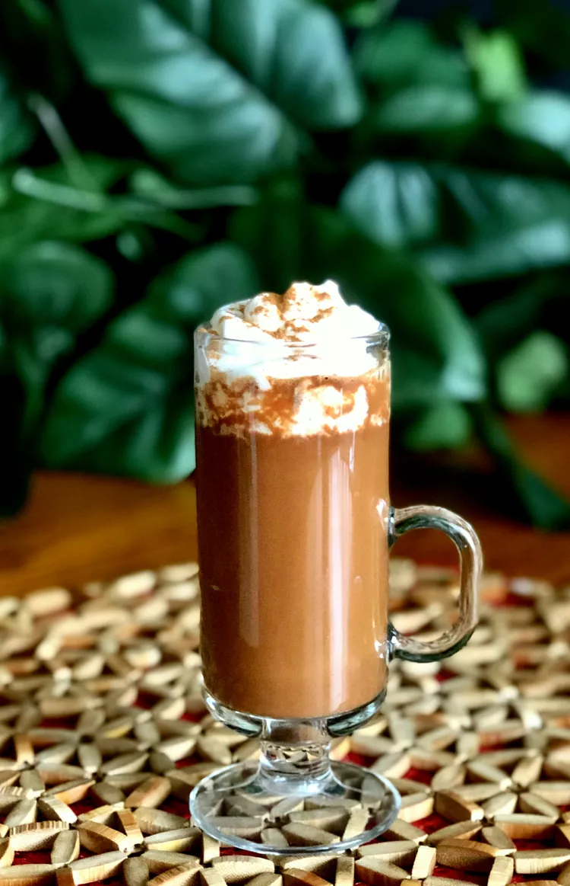

Vegan Mocha Latte

Description
A Delicious vegan mocha latte made in just a few minutes. Any type of nul milk or soy milk can be used in this recipe. If you're not vegan, try using full-fat milk for a richer and creamier version.
Ingredients
-
3/4 cup coconut milk beverage (suck as silk)
-
2 tablespoons vegan chocolate chips (such as enjoy life)
-
1/2 tablespoon espresso powder
-
1/4 teaspoon ground cinnamon
-
1/4 teaspoon vanilla extract
-
1 tablespoon vegan whipped cream (such as so delicious cocowhip)
Instructions
-
Combine coconut milk beverage and chocolate chips is a small saucepan over medium heat. Bring to a slow boil, whisking constantly, until chocolate chips are melted, 2 to 3 minutes.
-
whisk in espresso powder and cinnamon until completely incorporated. Remove from heat and stir in vanilla.
-
Top with vegan whipped cream.
Nutrition facts (per Serving)
229 Calories
17g Fat
25g Carbs
2g Protein